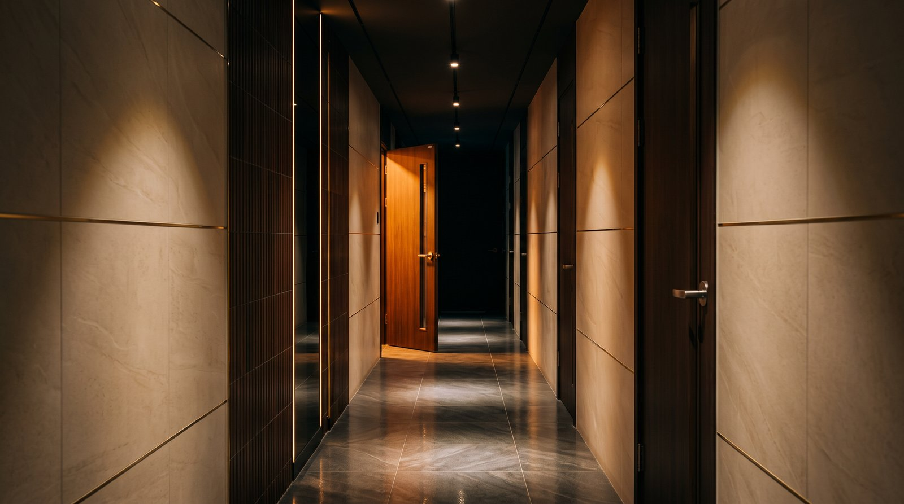

선릉역은 2호선과 수인분당선이 만나는 환승역으로, 강남에서도 비즈니스 수요가 특히 많은 지역입니다.
테헤란로를 따라 기업 본사와 금융기관이 밀집해 있어 평일 저녁 접대와 회식 수요가 꾸준합니다. 강남역이나 역삼 일대보다 밀집도가 낮아 비교적 차분하다는 점도 이 지역의 특징입니다.
접대 자리로 선릉을 고르는 이유
첫째, 접근성입니다. 2호선과 수인분당선이 지나 어느 방향에서든 오기 편합니다. 역삼역, 한티역, 삼성중앙역과도 가까워 강남 어디에 계시든 이동 부담이 적습니다.
둘째, 1차에서 넘어오기 좋습니다. 테헤란로 일대에 식당이 많아 저녁 자리를 마친 뒤 짧은 이동으로 자리를 옮기실 수 있습니다.
셋째, 분위기입니다. 강남역 일대는 밀집도가 높아 번잡한 편인데, 선릉 쪽은 상대적으로 차분합니다. 조용한 대화가 중심이 되는 자리에는 이쪽이 더 맞는 경우가 많습니다.
오시는 방법
지하철로 오시는 경우 2호선 선릉역 1번 출구에서 도보 5분 거리입니다. 1번 출구로 나오신 뒤 테헤란로 방향으로 직진하시면 됩니다. 큰길가에 인접해 있어 처음 오시는 분도 어렵지 않게 찾으실 수 있습니다.
자가용으로 오시는 경우 발렛 파킹을 이용하실 수 있습니다. 비용은 1만원이며, 방문 전에 미리 문의해 주시면 지원해 드리고 있습니다. 도착하셔서 차량을 맡기시면 그대로 출차하실 수 있어 주차 걱정 없이 방문하실 수 있습니다.
강남권에 계시다면 무료 픽업 서비스를 이용하시는 것이 가장 편합니다. 강남역, 역삼, 논현, 신논현, 삼성동, 선릉, 대치동 등 강남 일대 어디서든 위치를 알려주시면 차량으로 모시러 갑니다.
지역별 소요 시간
강남역과 신논현 방면에서는 차량으로 5분에서 10분 정도 걸립니다. 테헤란로를 따라 선릉역 방향으로 이동하시면 됩니다.
역삼과 논현 일대는 차량으로 5분 내외입니다. 가까운 거리라 픽업 요청 시 대기 시간이 짧습니다.
삼성동과 코엑스 방면에서는 10분 안팎이면 도착하실 수 있습니다.
대치동과 도곡 일대는 도보 또는 짧은 차량 이동으로 방문 가능한 가장 가까운 지역입니다.
1차 자리에서 이동하실 때
접대 자리는 1차에서 이동하는 경우가 대부분입니다.
이동 시간이 길어지면 자리 분위기가 한 번 끊깁니다. 그래서 1차 장소를 정하실 때부터 2차 동선을 함께 생각해 두시는 편이 좋습니다. 테헤란로 일대에서 식사하셨다면 이동 부담이 거의 없습니다.
이동하시기 전에 미리 연락 주시면 도착 시간에 맞춰 자리를 준비해 두겠습니다. 픽업이 필요하시면 1차 장소 위치를 알려주시면 됩니다.
도착하시면 예약을 도와드린 담당자 이름을 말씀해 주시면 바로 안내해 드립니다.
방문 시간대
평일 저녁에는 비교적 여유가 있습니다. 초저녁 시간대는 자리도 넉넉하고 주대도 1부 기준이라 부담이 덜합니다.
금요일과 토요일 밤은 자리가 먼저 빠집니다. 특히 아홉 시 이후 시간대는 미리 예약해 두시는 것이 좋습니다.
엘리트는 365일 연중무휴로 운영하므로 공휴일이나 늦은 시간에도 방문하실 수 있습니다.
자주 묻는 질문
Q. 선릉역에서 얼마나 걸리나요?
2호선 선릉역 1번 출구에서 도보 약 5분입니다. 길을 찾기 어려우시면 전화 주시면 바로 안내해 드립니다.
Q. 주차가 가능한가요?
발렛 파킹을 이용하실 수 있습니다. 비용은 1만원이며, 방문 전에 미리 문의해 주시면 지원해 드리고 있습니다.
Q. 픽업은 어디까지 되나요?
강남역, 역삼, 논현, 신논현, 삼성동, 선릉, 대치동 등 강남권 전 지역에서 무료 픽업이 가능합니다.
Q. 늦은 시간에 가도 되나요?
365일 연중무휴로 운영합니다. 새벽 시간대에도 방문하실 수 있습니다.
Q. 다른 역에서도 가까운가요?
2호선 역삼역, 수인분당선 한티역, 9호선 삼성중앙역에서도 가까워 어느 방향에서든 접근이 편리합니다.
정확한 주소와 지도는 오시는 길 페이지에 정리되어 있습니다.
이 글을 쓴 사람
강남 선릉 일대에서 가라오케 예약과 현장 안내를 맡고 있는 영준입니다. 매일 손님을 맞으면서 자주 받는 질문과 실제 운영 기준을 바탕으로 정리하고 있습니다. 궁금한 점은 편하게 문의해 주세요.